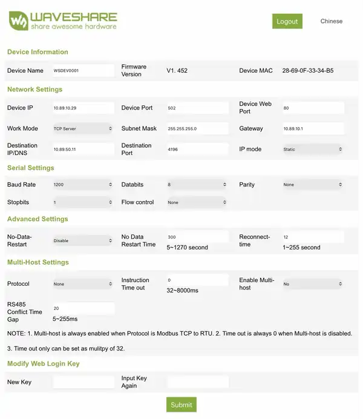

Validated WaveShare configuration
The gateway must act as a transparent serial bridge. Aquagem Pump sends complete RS485 frames itself, including the protocol framing and CRC, so the gateway must not translate Modbus TCP into RTU.
| WaveShare setting | Validated / required value |
|---|---|
| Work Mode | TCP Server |
| Device Port | 502 |
| Databits | 8 |
| Parity | None |
| Stopbits | 1 |
| Flow control | None |
| Protocol | None / transparent |
| Enable Multi-host | No |
| iSaver baud rate | 1200 |
| DM15 / Aquagem Modbus baud | 9600 |

Validated iSaver example. Network addresses are installation-specific. For DM15 / INVERsilence, use the same transparent-gateway principle but set the serial side to 9600-8-N-1.
iSaver vs DM15 serial settings
1200-8-N-1 · validated persistent OFF command value 1.9600-8-N-1 · 30–100% in 5% steps · OFF through register 3001 = 0.Do not place 1200-baud iSaver and 9600-baud Modbus devices on the same physical wired RS485 bus. One physical bus uses one serial configuration.
Several Modbus pumps behind one WaveShare
Aquagem Pump 0.4.0 can use several Modbus slave addresses through the same transparent RS485/TCP gateway. Each pump is a separate Home Assistant config entry, while the shared FIFO bus manager serializes complete request/response transactions.
WaveShare 192.168.1.50:502
├── DM15 0xAA
├── DM15 0xAB
└── DM15 0xACThe WaveShare remains in transparent mode. Aquagem Pump handles the RTU address, framing, CRC and FIFO scheduling.
Install Aquagem Pump
Install the integration through HACS, restart Home Assistant, add Aquagem Pump, select RS485/TCP and enter the WaveShare IP address and port.
For a single pump, automatic read-only protocol detection is the normal setup path. On a shared Modbus bus, you can target the required slave address explicitly.